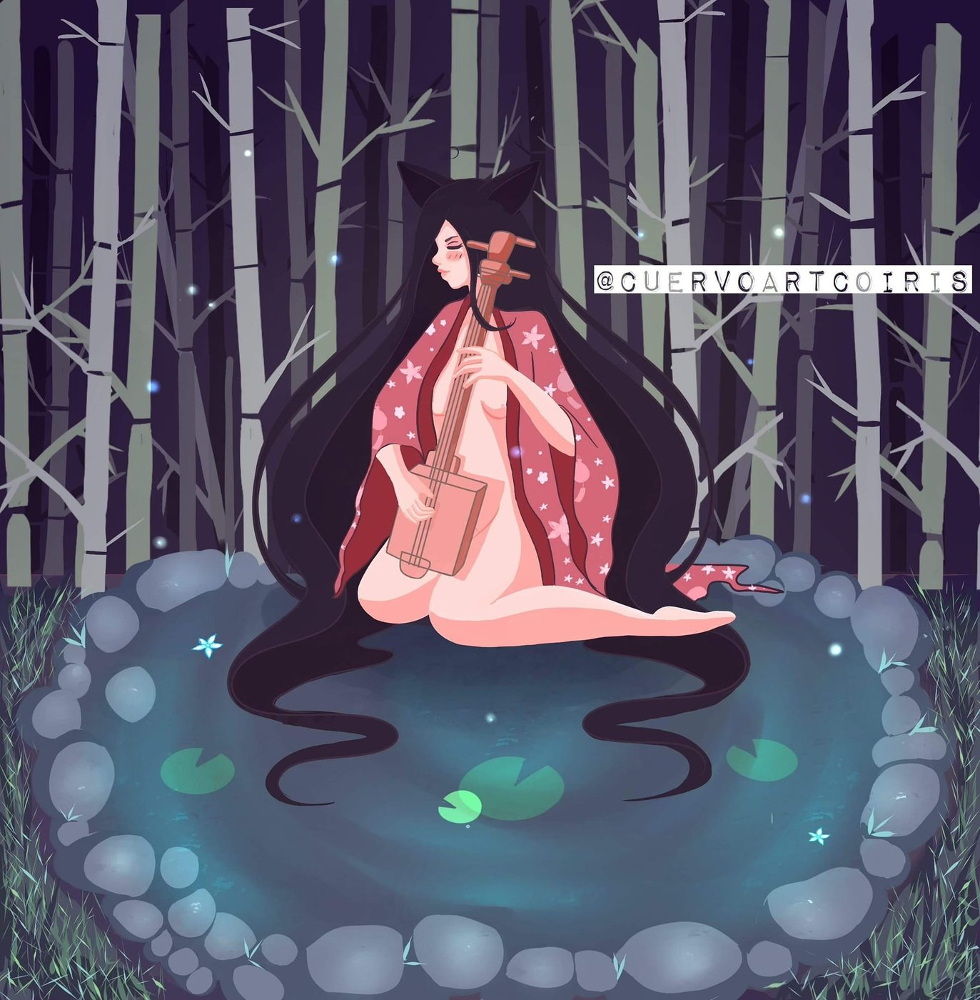

Narumi
Escena tranquila en un bosque de bambú donde nuestra personaje principal descansa tranquila despues de una revelacion espiritual.
Sobre la ilustración
Esta ilustración es parte de una historia que fue escrita por mi, narra el acontecimiento de una tragedia familiar donde la unica sobreviviente es bendecida con dones espirituales que la acompañaran a traves de su crecimiento personal.
El kimono rosa con flores contrasta con los tonos fríos del resto de la imagen y lleva la atención al centro. Los nenúfares y las flores pequeñas sobre el agua ayudan a que la escena se sienta delicada y silenciosa.
Técnica usada
La técnica es de ilustración digital con colores planos y sombras suaves. Lo más importante fue lo siguiente:
- Troncos de bambú repetidos en gris verdoso sobre un fondo morado oscuro, para crear profundidad y ambiente de noche.
- Puntos de luz muy pequeños que funcionan como luciérnagas y dan un aire mágico.
- Agua en azul verdoso con círculos de luz alrededor del personaje y nenúfares con un brillo suave.
- Piedras con formas simples y un par de luces claras, y pasto dibujado con trazos cortos en las orillas.